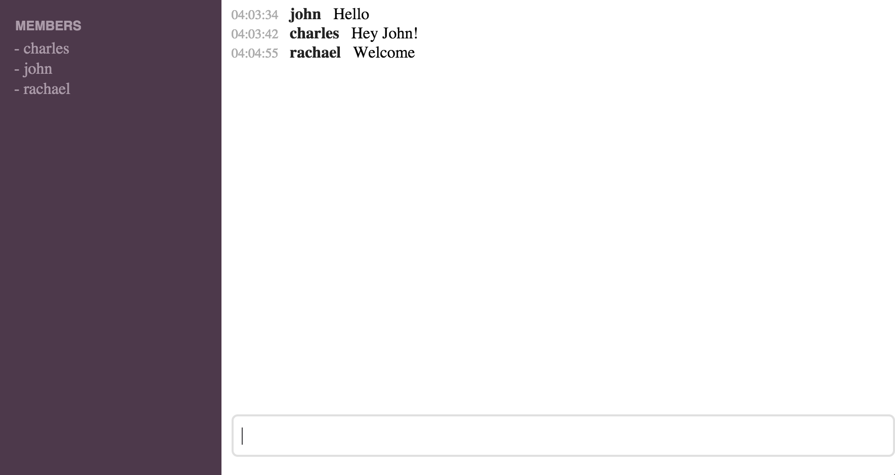

name: image layout: true class: center, middle, image --- name: image-white layout: true class: center, middle, image, image-white --- name: image-last layout: true class: center, middle, image, image-last --- name: code-small layout: true class: code-small --- name: question layout: true class: center, middle, question --- name: rule layout: true class: center, middle, rule --- name: boom layout: true class: boom --- name: inverse layout: true class: center, middle, inverse --- class: center, middle template: image layout: false # Bots --- layout: false  --- ## Repository Layout ``` src/ Chat/ Bot/ Answer/ Guess.hs Misc/ Guess.hs Run/ Guess.hs ... Guess.hs Chat.hs ``` --- template: question ## Bot --- ## Bot ```haskell data MaybeReply = JustReply String | NothingReply pingBot :: String -> MaybeReply pingBot m = undefined ``` --- ## Bot ```haskell data MaybeReply = JustReply String | NothingReply pingBot :: String -> MaybeReply pingBot m = case m of "/ping" -> JustReply "pong" _ -> NothingReply ``` --- template: inverse ## Now it's your turn!